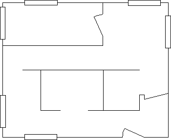

Cosmetic lines represent the mathematical ideal of a one-dimensional line. The width attribute associated with them is provided only for ease of drawing these lines larger than one pel.
In contrast, geometric line width is not an attribute; it is a geometric property. To set the width of a geometric line, an application can use GpiSetLineWidthGeom. This geometric width takes effect only when a path is converted to a geometric wide line using GpiStrokePath or GpiModifyPath.
If a geometric line is drawn before the geometric width is specified, the drawn line is defined by the cosmetic line width-usually 1-which results in the thinnest possible line for the currently associated device. A geometric line width has no default in the same way that the sides of a box, drawn with GpiBox, have no length until specified by the function.
The value specified with GpiSetLineWidthGeom is the thickness of the line in world coordinates, and it is subject to scaling by the current transformations in effect at the time GpiModifyPath or GpiStrokePath is called. For example, if you apply a transform with a scaling factor of 0.5, for an object whose current geometric line width is four world coordinates, the width of the displayed line will be halved.
In the floor plan shown in the following figure, the outer walls were drawn using geometric lines. All of the other objects were drawn using normal lines.

Geometric Lines and Normal Lines
Your application can determine the current geometric width by calling GpiQueryLineWidthGeom.